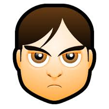

Srdjan
Grujeskovic
Templates
Categories
Analytics
Good
Consistency
What's up, Srdjan!
Categories
40 Task
Bussines
40 Task
Bussines
Today's tasks
Neki zadatak za danas!
Neki zadatak za danas!
Neki zadatak za danas!
Neki zadatak za danas!
Neki zadatak za danas!
Add Task
Add Task
Reset Task